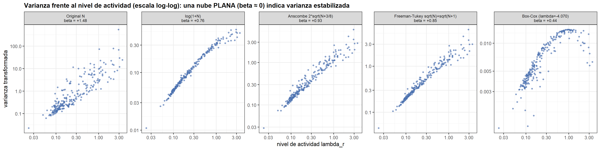
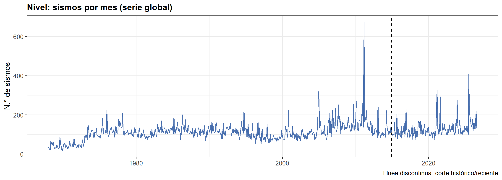
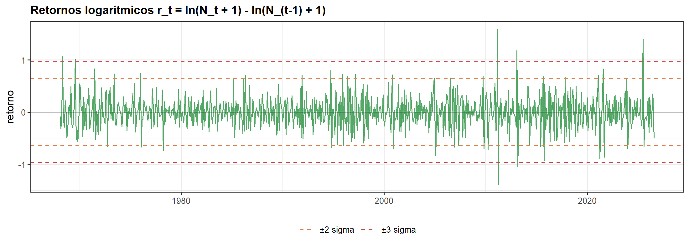
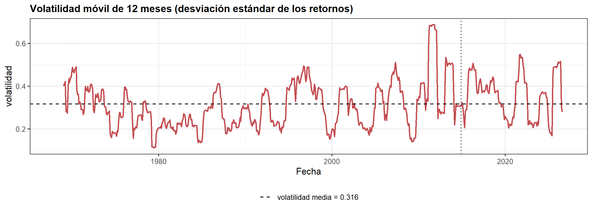

8 8. Transformaciones
8.1 8.1 Transformaciones estabilizadoras de varianza
N <- as.numeric(panel_hist$n_eventos)
# Box-Cox por máxima verosimilitud (y debe ser estrictamente positiva)
boxcox_mle <- function(y) {
ly <- log(y); n <- length(y)
transf <- function(lam) if (abs(lam) < 1e-8) ly else (y^lam - 1) / lam
ll <- function(lam) {
z <- transf(lam)
-n / 2 * log(mean((z - mean(z))^2)) + (lam - 1) * sum(ly)
}
lam <- optimize(ll, interval = c(-10, 10), maximum = TRUE)$maximum
list(lambda = lam, z = transf(lam))
}
safe_sw <- function(v) tryCatch(shapiro.test(v)$p.value, error = function(e) NA_real_)
transformaciones <- list(
"Original N" = N,
"log(1+N)" = log1p(N),
"Anscombe 2*sqrt(N+3/8)" = 2 * sqrt(N + 3 / 8),
"Freeman-Tukey sqrt(N)+sqrt(N+1)" = sqrt(N) + sqrt(N + 1)
)
bc <- tryCatch(boxcox_mle(N + 1), error = function(e) NULL)
lam_bc <- if (is.null(bc)) NA_real_ else bc$lambda
if (!is.null(bc)) transformaciones[[sprintf("Box-Cox (lambda=%.3f)", lam_bc)]] <- bc$z
# --- Criterio: exponente de la LEY DE POTENCIAS DE TAYLOR ---
# Se regresa log(varianza de la variable TRANSFORMADA en la región) sobre
# log(nivel de actividad ORIGINAL de la región, lambda_r). Anclar el eje x al nivel
# original es lo que hace comparables entre sí a las distintas transformaciones.
# beta = 1 -> varianza proporcional al nivel (Poisson puro: heterocedástico)
# beta = 0 -> varianza CONSTANTE: homocedasticidad lograda
nivel_region <- panel_hist %>% group_by(region) %>% summarise(nivel = mean(n_eventos))
var_por_region <- function(v) {
tibble(region = panel_hist$region, v = as.numeric(v)) %>%
group_by(region) %>%
summarise(varianza = var(v)) %>%
left_join(nivel_region, by = "region") %>%
filter(varianza > 0, nivel > 0) %>%
drop_na()
}
tabla_trans <- imap(transformaciones, function(serie, nombre) {
est <- var_por_region(serie)
beta <- if (nrow(est) > 5) unname(coef(lm(log(varianza) ~ log(nivel), data = est))[2]) else NA_real_
rho <- suppressWarnings(cor(est$nivel, est$varianza, method = "spearman"))
# Dispersión relativa de las varianzas entre regiones: cuanto menor, más homogéneas
cv_var <- sd(est$varianza) / mean(est$varianza)
grupos <- tibble(region = panel_hist$region, v = as.numeric(serie)) %>%
group_by(region) %>%
filter(n() > 20) %>%
group_split() %>%
map(~ .x$v)
W <- levene_bf(head(grupos, 60))$W
s <- as.numeric(serie); s <- s[!is.na(s)]
tibble(Transformacion = nombre, beta_Taylor = beta, CV_varianzas = cv_var,
Levene_W = W, rho_nivel_var = rho,
Asimetria = skewness(s), Curtosis = kurtosis(s) - 3,
Shapiro_p_mediana = median(replicate(60, safe_sw(sample(s, 45))), na.rm = TRUE))
}) %>% bind_rows()
kab(tabla_trans, digits = 4)| Transformacion | beta_Taylor | CV_varianzas | Levene_W | rho_nivel_var | Asimetria | Curtosis | Shapiro_p_mediana |
|---|---|---|---|---|---|---|---|
| Original N | 1.4826 | 6.6398 | 40.3797 | 0.8937 | 100.8077 | 20,350.7890 | 0 |
| log(1+N) | 0.7643 | 0.8427 | 131.4319 | 0.9960 | 2.4461 | 7.9043 | 0 |
| Anscombe 2*sqrt(N+3/8) | 0.9251 | 1.2480 | 113.9425 | 0.9773 | 5.6488 | 103.0539 | 0 |
| Freeman-Tukey sqrt(N)+sqrt(N+1) | 0.8460 | 1.0961 | 108.7106 | 0.9879 | 4.5714 | 69.8741 | 0 |
| Box-Cox (lambda=-4.070) | 0.4436 | 0.5025 | 68.1131 | 0.9121 | 1.3031 | -0.2967 | 0 |
est_all <- imap(transformaciones, ~ var_por_region(.x) %>% mutate(transf = .y)) %>%
bind_rows() %>%
left_join(tabla_trans %>% select(Transformacion, beta_Taylor), by = c("transf" = "Transformacion")) %>%
mutate(panel = sprintf("%s\nbeta = %+.2f", transf, beta_Taylor),
panel = factor(panel, levels = unique(panel)))
ggplot(est_all, aes(nivel, varianza)) +
geom_point(size = 1.1, alpha = 0.6, color = AZUL) +
scale_x_log10() + scale_y_log10() +
facet_wrap(~ panel, nrow = 1, scales = "free_y") +
labs(title = "Varianza frente al nivel de actividad (escala log-log): una nube PLANA (beta ≈ 0) indica varianza estabilizada",
x = "nivel de actividad lambda_r", y = "varianza transformada") +
theme(strip.text = element_text(size = 8))
# Se excluye la variable original (es el punto de partida, no una opción) y se descarta
# Box-Cox cuando su lambda cae fuera del rango interpretable: con exceso de ceros el
# ajuste es degenerado y la transformación resultante no tiene lectura práctica.
candidatas_t <- tabla_trans %>% filter(Transformacion != "Original N")
box_cox_valida <- is.finite(lam_bc) && lam_bc >= -0.25 && lam_bc <= 1.25
if (!box_cox_valida) candidatas_t <- candidatas_t %>% filter(!str_starts(Transformacion, "Box-Cox"))
mejor_t <- candidatas_t %>% arrange(abs(beta_Taylor)) %>% slice(1)
beta0 <- tabla_trans$beta_Taylor[1]La variable original tiene un exponente de Taylor beta = 1.483: próximo a 1, es decir, la varianza crece de forma aproximadamente proporcional a la media. Esa es la heterocedasticidad que predice el modelo de Poisson (Var = E) y la razón por la que no puede usarse una desviación estándar común para fijar límites de control válidos en regiones con niveles de actividad muy distintos. La transformación recomendada es log(1+N), que lleva el exponente a beta = +0.764 (beta = 0 significa varianza constante). Box-Cox estima por máxima verosimilitud lambda = -4.070. El valor se aleja del rango habitual (0 = log, 0.5 = raíz), lo que era previsible: Box-Cox exige datos estrictamente positivos y aquí se aplicó sobre N + 1 con un exceso de ceros. Con exceso de ceros, Box-Cox pierde sentido y los estabilizadores específicos para conteos (Anscombe, Freeman-Tukey), derivados analíticamente de la distribución de Poisson, son preferibles.
8.2 8.2 Retornos logarítmicos: la actividad sísmica como serie de «volatilidad»
serie_glob <- panel %>% group_by(mes) %>% summarise(n = sum(n_eventos))
d_ret <- tibble(fecha = serie_glob$mes[-1], r = diff(log1p(serie_glob$n)))
d_ret$vol <- as.numeric(rollapply(d_ret$r, 12, sd, fill = NA, align = "right"))
sd_r <- sd(d_ret$r)
# (1) Nivel
ggplot(serie_glob, aes(mes, n)) +
geom_line(color = AZUL, linewidth = 0.5) +
geom_vline(xintercept = MES_CORTE, color = "black", linetype = "dashed") +
labs(title = "Nivel: sismos por mes (serie global)", x = NULL, y = "N.° de sismos",
caption = "Línea discontinua: corte histórico/reciente")
# (2) Retornos con bandas de ±2 y ±3 sigma
lim_r <- tibble(y = c(2, -2, 3, -3) * sd_r,
banda = rep(c("±2 sigma", "±3 sigma"), each = 2))
ggplot(d_ret, aes(fecha, r)) +
geom_line(color = VERDE, linewidth = 0.5) +
geom_hline(yintercept = 0, color = "black", linewidth = 0.4) +
geom_hline(data = lim_r, aes(yintercept = y, color = banda), linetype = "dashed") +
scale_color_manual(values = c("±2 sigma" = NARANJA, "±3 sigma" = ROJO), name = NULL) +
labs(title = "Retornos logarítmicos r_t = ln(N_t + 1) - ln(N_(t-1) + 1)", x = NULL, y = "retorno")
# (3) Volatilidad móvil de 12 meses
lab_vol <- sprintf("volatilidad media = %.3f", mean(d_ret$vol, na.rm = TRUE))
ggplot(d_ret, aes(fecha, vol)) +
geom_line(color = ROJO, linewidth = 0.9, na.rm = TRUE) +
geom_hline(aes(yintercept = mean(vol, na.rm = TRUE), linetype = lab_vol), color = "black") +
geom_vline(xintercept = MES_CORTE, color = "black", linetype = "dotted") +
scale_linetype_manual(values = setNames("dashed", lab_vol), name = NULL) +
labs(title = "Volatilidad móvil de 12 meses (desviación estándar de los retornos)",
x = "Fecha", y = "volatilidad")
vol_h <- sd(d_ret$r[d_ret$fecha < MES_CORTE])
vol_r <- sd(d_ret$r[d_ret$fecha >= MES_CORTE])
F_var <- vol_r^2 / vol_h^2
n1 <- sum(d_ret$fecha < MES_CORTE) - 1
n2 <- sum(d_ret$fecha >= MES_CORTE) - 1
p_F <- 2 * min(pf(F_var, n2, n1), 1 - pf(F_var, n2, n1))
ks_r <- suppressWarnings(ks.test(as.numeric(scale(d_ret$r)), "pnorm", exact = FALSE))
p_ks_r <- ks_r$p.value- Volatilidad HISTÓRICA: 0.3135
- Volatilidad RECIENTE: 0.3582 (razón = 1.143)
- Test F de igualdad de varianzas: F = 1.306. p = 3.82e-02 < 0.05 → se RECHAZA misma volatilidad. Conclusión: la volatilidad cambió
- Normalidad de los retornos (K-S): p = 2.46e-01 ≥ 0.05 → NO se rechaza retornos normales
- Asimetría de los retornos = +0.249 | Curtosis (exceso) = +1.843